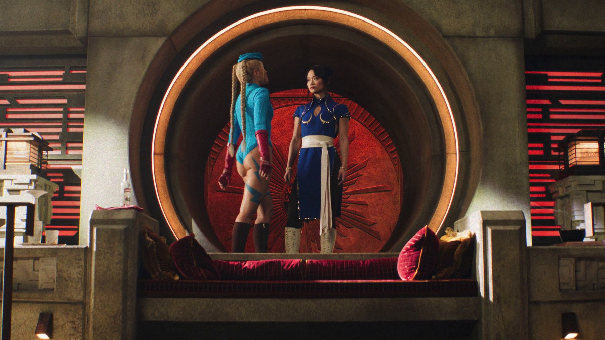

Street Fighter
Il picchiaduro di Capcom arriva in sala con tanta energia e un affetto evidente per il gioco, ma i critici si fermano a sceneggiatura e finale
Quarantuno per cento dei critici, ottanta per cento del pubblico. A pochi giorni dall'uscita, Street Fighter è già un film con due verità, e la distanza tra le due dice più di qualsiasi riassunto. Il film di Kitao Sakurai è nelle sale italiane dal 15 ottobre 2026 e prova a fare con i lottatori di Capcom quello che pochi adattamenti dei videogiochi hanno saputo fare: restare fedele al gioco senza smettere di essere un film.
Di cosa parla Street Fighter?
La premessa è quella di un torneo. Chun-Li, interpretata da Callina Liang, recluta Ryu e Ken Masters, cioè Andrew Koji e Noah Centineo, per partecipare a una competizione e affrontare M. Bison, il dittatore a capo di un'organizzazione che minaccia il mondo, qui con il volto di David Dastmalchian. Nel cast ci sono anche Jason Momoa nei panni di Blanka e Cody Rhodes in quelli di Guile. La regia è di Sakurai, il film dura 120 minuti ed è prodotto da Capcom e Legendary Pictures, con un budget di 82 milioni di dollari.

La critica italiana: energia e nostalgia
In Italia la voce che abbiamo letto è quella di Pedro Armocida su MYmovies, ed è la più incoraggiante. Armocida apprezza l'approccio energico del regista e il modo in cui il film mescola animazione 2D nostalgica, combattimenti ad alta adrenalina e un tono che non si prende troppo sul serio. Lo stesso critico indica però i punti deboli: le motivazioni dei personaggi sono poco chiare e l'antagonista non è del tutto credibile, mentre la sceneggiatura ha alti e bassi molto marcati.
Una sola recensione italiana non fa un quadro, e lo diciamo apertamente. Ci sembra però significativo che già qui il discorso si divida in due: la messa in scena convince, la storia molto meno. È lo schema che si ripete nei punteggi, e per questo pensiamo che chi ama il gioco troverà più motivi per andare in sala di chi cerca un buon racconto.
Cosa dicono i critici internazionali
I numeri sono severi. A ottobre 2026 Rotten Tomatoes assegna a Street Fighter il 41% di recensioni positive su 96, e Metacritic una media di 44 su 100 su 26 recensioni, che corrisponde a pareri «misti o nella media». La sintesi di Rotten Tomatoes riconosce al film molto affetto per il materiale d'origine, ma lo punisce per un racconto incoerente e un umorismo infantile.
Le singole voci, riportate dalla stessa pagina, sono più sfumate. Clint Worthington, su RogerEbert.com, trova che le due ore di durata si chiudano con un richiamo evidentissimo al sequel, che finisce per rendere il film ancora più incompiuto. Grace Randolph, su Beyond the Trailer, è la più generosa: il cast è ottimo, il film è molto energico e visivamente creativo, ma la sceneggiatura è piuttosto brutta e il finale arriva in modo ridicolmente brusco.
Perché il pubblico lo vede in modo diverso
Sempre su Rotten Tomatoes, il gradimento del pubblico è all'80%, quasi il doppio di quello dei critici. Non sappiamo con certezza da cosa dipenda: possiamo solo notare che le lodi dei critici, cioè l'energia, la creatività visiva e l'affetto per il gioco, sono proprio le cose che un pubblico di appassionati cerca per prime, mentre le critiche riguardano la sceneggiatura e il finale, che per chi va in sala a vedere dei duelli pesano forse meno. È un'ipotesi nostra, non un dato, e vale la pena rileggerla tra qualche settimana, quando i voti del pubblico saranno più numerosi.
Cosa sapere prima di andare in sala
Il film dura due ore piene, e Worthington le definisce faticose perché si concludono con un richiamo evidente al sequel. Chi non sopporta le storie lasciate aperte è avvisato. In Italia lo distribuisce Eagle Pictures e la data da segnare è il 15 ottobre 2026, un giorno prima degli Stati Uniti. La trama, come la riassume la scheda di MYmovies, è semplice: un torneo, un gruppo di lottatori e un avversario da fermare. Stando ad Armocida e Randolph, chi ama l'estetica del gioco troverà più di un motivo per divertirsi; resta il dubbio, che i critici sollevano in modi diversi, su quanto l'energia basti a reggere un film intero.
Il botteghino
In Italia il film ha esordito al sesto posto del botteghino, con 53.469 euro nel primo giorno e 6.756 spettatori in 270 sale, secondo i dati riportati da MYmovies. Sul fronte mondiale, Wikipedia registra a ottobre 2026 un incasso mondiale di 31 milioni di dollari, contro un budget di 82: una cifra parziale, perché il film è uscito da pochissimi giorni. Aggiorneremo la pagina quando il quadro sarà più chiaro.
Vale la pena vederlo al cinema?
Dipende da cosa cercate. Se amate il videogioco e volete rivedere sullo schermo grande i lottatori che conoscete, con molta azione e un po' di nostalgia, le voci di Armocida e Randolph indicano che il film può darvi esattamente questo. Se invece cercate una storia ben costruita, con personaggi dalle motivazioni chiare e un finale che chiuda davvero, la critica che abbiamo letto vi consiglia prudenza. Il nostro giudizio, in mancanza di una visione diretta, è quello che emerge da queste letture.
Un adattamento che, secondo i critici letti, ha l'energia e l'affetto giusti per il gioco ma racconta male la sua storia e chiude in modo brusco. Se da un lato i combattimenti e il tono scanzonato sono il motivo per andare in sala, dall'altro il 41% su Rotten Tomatoes pesa. Lo consigliamo a chi cerca un film d'azione nostalgico, non a chi cerca un racconto solido.
Domande frequenti
Quando esce Street Fighter in Italia?
Nelle sale italiane dal 15 ottobre 2026, con Eagle Pictures. Negli Stati Uniti l'uscita ampia è del 16 ottobre.
Quanto dura Street Fighter?
120 minuti.
Di cosa parla il film?
Chun-Li recluta i lottatori Ryu e Ken Masters per un torneo e per affrontare M. Bison, il capo di un'organizzazione che minaccia il mondo.
Cosa dice la critica?
A ottobre 2026 Rotten Tomatoes assegna il 41% su 96 recensioni e Metacritic 44 su 100 su 26 recensioni: giudizi in prevalenza severi, con l'energia come punto più apprezzato.